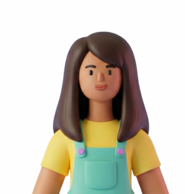
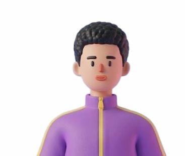
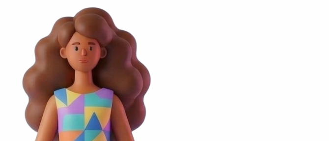
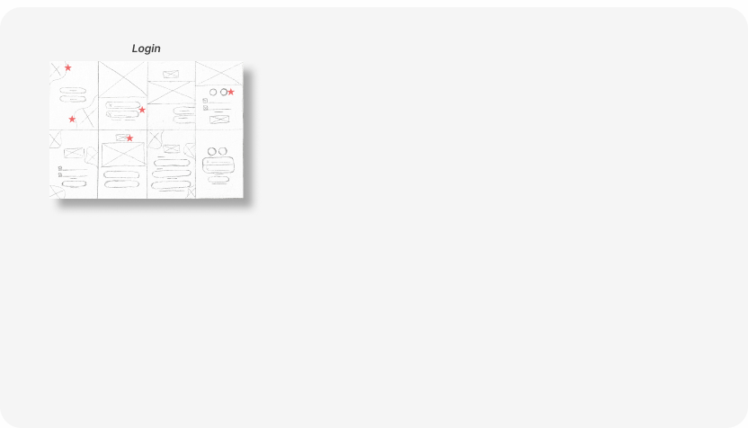
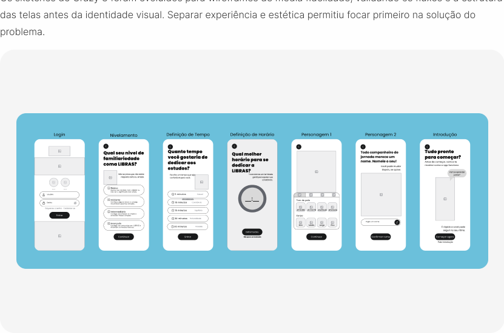

“Brincar é a maneira favorita do nosso cérebro aprender.” - Diane Ackerman
Nina é um aplicativo gamificado de aprendizado de LIBRAS para pessoas ouvintes. A proposta é criar condições para que o aprendizado vire hábito. Com pesquisa real, processo completo e protótipo interativo, o projeto nasceu como Trabalho de Conclusão de Curso de Bacharelado em Design da Universidade Federal de Uberlândia.

LIBRAS é reconhecida por lei desde 2002, a comunicação ainda depende de improviso.
A Língua Brasileira de Sinais foi oficializada por lei, mas a comunicação cotidiana entre surdos e ouvintes ainda enfrenta barreiras. Isso limita o acesso a serviços básicos, gera isolamento da comunidade surda e dependência de intérpretes em situações simples. A pesquisa realizada mostrou que o interesse dos ouvintes em aprender LIBRAS existe. O que falta é uma forma de aprendizado possível de manter.
Público-alvo
Adultos ouvintes de nível iniciante ou básico
Objetivo
Tornar o aprendizado de LIBRAS acessível e contínuo
Abordagem
Gamificação aplicada ao aprendizado de língua
Situação
TCC em design desenvolvido em 3 meses
O Double Diamond estrutura o processo, o Design Thinking orienta a condução.
O processo seguiu o Double Diamond como estrutura, organizado em quatro etapas que alternam momentos de divergência e convergência: Descobrir, Definir, Desenvolver e Entregar. Dentro dessa estrutura, foi adotado o Design Thinking, com foco centrado no usuário e nas necessidades humanas.

Compreender os usuários, suas necessidades e dificuldades.
Foi feita a compreensão do problema antes de propor qualquer solução, por meio de pesquisas e da aproximação com os usuários, foram identificadas suas necessidades, dificuldades e comportamentos, evitando que as decisões fossem baseadas apenas em suposições.
Desk Research
A pesquisa bibliográfica sobre Libras, comunidade surda, aprendizagem visual-espacial e gamificação foi essencial para compreender a estrutura da língua antes de projetar. Quatro achados principais guiaram o projeto: Libras é visual-espacial; aprender exige repetição e contexto; a gamificação deve apoiar objetivos pedagógicos; e os sinais precisam seguir critérios claros de padronização.
5 PARÂMETROS
Língua visual-espacial e possui parâmetros linguísticos
APRENDIZADO
A aprendizagem de línguas exige repetição, contexto e feedback
GAMIFICAÇÃO
Reforça objetivos pedagógicos baseados na gramática da língua
VARIAÇÕES
Os sinais precisam seguir critérios claros de padronização
Pesquisas
Foram desenvolvidas duas pesquisas remotas via formulário: uma com estudantes para entender suas necessidades e barreiras no aprendizado de LIBRAS, e outra com professores para mapear desafios de ensino e oportunidades de aprimorar o processo de aprendizagem.
Formulário com estudantes
50 respostas coletadas, sendo 37 válidas. As 13 desconsideradas eram de pessoas sem contato com LIBRAS, fora do escopo da pesquisa, que buscava entender as barreiras de quem já tentou aprender.
possuem nível básico ou iniciante na língua
apontam lembrar dos sinais como uma das principais dificuldades
preferem aprender por meio de prática ativa
preferem jogos divertidos e envolventes
gostariam de ampliar o vocabulário por meio do jogo
dos participantes nunca utilizaram apps para aprender LIBRAS
Formulário com professores
10 professores. 10 respostas válidas. Os dados reforçaram o que os estudantes já tinham apontado e trouxeram a perspectiva de quem observa o problema de fora.
Principais dificuldades dos alunos segundo os professores
Lembrar os sinais, aprender sozinho por falta de alguém para praticar, manter constância nos estudos e encontrar materiais visuais claros e confiáveis.
O que mais ajuda no aprendizado
Jogos com desafios e recompensas, prática ativa com repetição e exercícios, e vídeos com demonstrações dos sinais.
Problema nos materiais didáticos existentes
Sinais mal ilustrados ou confusos e falta de clareza no movimento das mãos.
Personas
Três personas foram construídas a partir dos dados da pesquisa, representando diferentes motivações para aprender Libras. Isso permitiu considerar expectativas e objetivos distintos, garantindo que a solução atendesse a diferentes perfis de usuários.
Persona 1
Ana Silva
“Tenho curiosidade em aprender Libras, mas só continuo quando o conteúdo é rápido, visual e fácil de entender.”

Objetivos:
Aprender sinais, ampliar o vocabulário e entender os movimentos das mãos
Dificuldades:
Memorização, compreensão dos movimentos e encontrar materiais claros e confiáveis
Comportamento:
Prefere jogos simples e visualmente agradáveis, desiste de experiências lentas, confusas ou pouco envolventes
Persona 2
Bruno Ferreira
“Aprendo Libras porque é uma exigência do curso, então o jogo precisa tornar essa obrigação mais leve e motivadora.”

Objetivo:
Ampliar o vocabulário, ganhar confiança e consolidar o aprendizado da disciplina
Dificuldades:
Memorizar os sinais e manter a constância
Comportamento:
Prefere demonstrações visuais e prática ativa, engaja com recompensas e sensação de progresso e desiste de experiências confusas ou pouco envolventes
Persona 3
Mariana Costa
“Quero aprender Libras para me comunicar melhor com pessoas próximas, mas preciso de algo leve, visual e útil no dia a dia.”

Objetivo:
Aprender sinais, entender a estrutura da Libras e conhecer a cultura e a comunidade surda
Dificuldades:
Memorizar, diferenciar sinais semelhantes e praticar sem alguém para acompanhar
Comportamento:
Prefere vídeos e situações contextualizadas, engaja com experiências visuais, simples e envolventes e desiste de jogos longos, complexos ou pouco interessantes
Identificar prioridades e direcionar a solução.
Os dados coletados na descoberta são analisados e organizados para identificar os principais problemas e oportunidades. Esse processo transforma informações dispersas em um direcionamento claro, garantindo que a solução responda às necessidades mais relevantes dos usuários.
JTBD - Jobs To Be Done
Ferramenta usada para entender o que os usuários buscam ao aprender Libras. Foram identificados três perfis: aprender do zero de forma estruturada, manter a constância e revisar o conteúdo aprendido. Entender esses objetivos evita criar funcionalidades que não atendem às necessidades reais.
Persona
Aprendiz iniciante motivado por inclusão: quer aprender Libras do zero, mas não sabe por onde começar, tem medo de errar e busca um aprendizado leve e significativo que se adapte à sua rotina.
Persona
Aprendiz iniciante motivado por inclusão: quer aprender Libras do zero, mas não sabe por onde começar, tem medo de errar e busca um aprendizado leve e significativo que se adapte à sua rotina.
Dor/Problema
Conteúdos dispersos, dificuldade em manter a constância, medo de errar e um aprendizado tradicional pouco engajador.
Dor/Problema
Conteúdos dispersos, dificuldade em manter a constância, medo de errar e um aprendizado tradicional pouco engajador.
Solução/Resultado Funcional
Aplicativo gamificado, progressão por níveis, microlições, feedbacks construtivos e aprendizado contextualizado.
Solução/Resultado Funcional
Aplicativo gamificado, progressão por níveis, microlições, feedbacks construtivos e aprendizado contextualizado.
Proposta de Valor Chave
Oferecer uma experiência contextualizada e envolvente de aprendizagem de LIBRAS que permita ao usuário evoluir com segurança, constância e propósito inclusivo.
5W2H
Estruturou o problema em sete perguntas, revelando um contexto de adultos ouvintes iniciantes que estudam pelo celular em momentos curtos, sem estímulos regulares para manter o hábito. Essa análise garantiu uma compreensão completa do problema antes da ideação.

HMW - How Might We
Os problemas identificados foram transformados em três perguntas abertas que guiaram a ideação. A técnica HMW transforma desafios em oportunidades, direcionando o projeto para possibilidades de solução.
Como poderíamos apoiar pessoas ouvintes iniciantes em LIBRAS a manter a constância nos estudos, mesmo dispondo de curtos períodos de tempo?
Essa pergunta, focada em manter a constância com pouco tempo, revelou a necessidade de sessões curtas, notificações personalizáveis e um personagem que incentive a atenção diária, com penalidades leves para motivar sem frustrar.
Como poderíamos apoiar a prática recorrente de sinais já estudados, reduzindo o esquecimento e o tempo gasto para retomar conteúdos?
Essa pergunta, focada em prática complementar, revelou a necessidade de sessões curtas, notificações personalizáveis e um personagem que incentive a prática diária, com penalidades leves para motivar sem frustrar.
Como poderíamos apoiar a motivação dos usuários durante o processo de aprendizagem de LIBRAS, evitando o abandono mesmo quando o progresso é gradual?
Essa pergunta, focada em motivação e engajamento, revelou a necessidade de recompensas visíveis, conquistas e evolução do personagem que valorizem o progresso, mesmo em pequenas interações.
Algumas ideias foram descartadas nessa etapa por complexidade técnica ou risco de sobrecarga cognitiva, mas ficaram registradas para versões futuras.
Transformar ideias em soluções que respondam às necessidades dos usuários.
As oportunidades identificadas foram transformadas em ideias e soluções, exploradas e refinadas com foco na experiência do usuário.
Análise de similares
Foram analisados dois grupos: apps de ensino de idiomas e jogos de simulação de cuidado, cada um contribuindo com elementos para a solução. A análise de jogos de cuidado foi essencial porque o desafio era também manter o engajamento e a constância, não apenas ensinar o conteúdo.
| Aplicativo | Objetivo | Gamificação | Interatividade | Visual | Contribuição |
|---|---|---|---|---|---|
| Duolingo | Ensino de idiomas | Sistema de níveis, recompensas e desafios | Alta | Ícones, animações e feedback visual | Estrutura de progressão e motivação |
| Hand Talk | Ensino e tradução em LIBRAS | Trilhas estruturadas e atividades | Média | Avatar 3D tradutor de sinais | Organização do aprendizado em módulos |
| Loodus | Interação educacional | Mecânica simples de recompensa | Média | Personagem interativo | Mecânica de solicitação ao usuário |
| Tamagotchi | Simulação de cuidado virtual | Sistema de responsabilidade e evolução | Média | Personagem interativo | Mecânica de cuidado e responsabilidade |
| Pou | Jogo casual de cuidado virtual | Recompensas e atividades | Alta | Personagem simples e interativo | Mecânica de cuidado e responsabilidade |
| The Sims | Simulação de vida | Progressão e gerenciamento de necessidades | Alta | Ambiente e personagens simulados | Sistema de evolução e responsabilidade |
Sketch
Primeiros esboços da mecânica e dos fluxos principais. O conceito do jogo de cuidado com três ambientes (quarto, cozinha e sala) começou a tomar forma. Os esboços permitiram explorar ideias rapidamente antes de construir as telas.

Flowchart
Foi criado um fluxograma com todas as funcionalidades previstas. Após analisar o tempo disponível, o escopo foi reduzido e um segundo fluxo foi criado, focado no onboarding e suas interações. O primeiro definiu o escopo e as prioridades; o segundo detalhou a funcionalidade desenvolvida no TCC e orientou as próximas etapas.
Flowchart de todo o sistema
Ver fluxogramaFlowchart do onboarding
Ver fluxogramaMatriz de Eisenhower
Com o escopo maior que o tempo disponível, a Matriz de Eisenhower organizou as funcionalidades por urgência e importância. O onboarding foi priorizado por permitir compreender a lógica do jogo como um todo, enquanto ranking, pagamentos e correção por IA ficaram para versões futuras. A categorização considerou o que era essencial para essa compreensão dentro do prazo disponível.
Importante e urgente
- Login
- Avaliação Inicial
- Definir Rotina de Estudo
- Introdução ao Onboarding
- Onboarding da Quarto
- Onboarding da Cozinha
- Onboarding da Sala
- Encerramento do Onboarding
Importante e não urgente
- Cadastro
- Permissões de Uso
- Tela de Abertura (Splash)
- Configurações Gerais
- Feedback e Acompanhamento
- Animação real de sinais de LIBRAS
Não importante e urgente
- Configurações de acessibilidade
- Notificações push
- Mini-jogo totalmente funcional
- Funcionamento do sistema premium
- Execução real de exercícios de LIBRAS
Não importante e não urgente
- Ranking entre usuários
- Sistema de pagamento
- Modo demo (visitante)
- Modo escuro
Crazy 8
Foi utilizado para explorar rapidamente diferentes soluções para a mesma necessidade, gerando oito ideias em poucos minutos. A técnica amplia as possibilidades e evita a fixação na primeira solução, permitindo comparar alternativas antes de definir o caminho a seguir.

Wireframes
Os sketches do Crazy 8 foram evoluídos para wireframes de média fidelidade, validando os fluxos e a estrutura das telas antes da identidade visual. Separar experiência e estética permitiu focar primeiro na solução do problema.

Transformar as soluções desenvolvidas em uma experiência funcional e validada.
Antes dos wireframes de alta fidelidade, foram definidas as decisões estéticas: nome, cores, tipografia e tom de voz. Essa base garantiu consistência visual antes da construção das telas.
Direção visual e identidade
Tom de voz
Em um aplicativo educacional, a comunicação influencia a percepção sobre erros e progressos, reduzindo frustrações e incentivando a continuidade dos estudos, por isso o tom foi definido como acolhedor, encorajador, respeitoso e acessível, criando uma experiência mais confortável e motivadora.

Nome
O nome Nina vem de "ninar", que carrega cuidado e acolhimento, e também é um nome pessoal, reforçando que existe um personagem real para cuidar. O vínculo afetivo com o personagem sustenta o engajamento. O nome contribui para tornar esse vínculo mais humano desde o primeiro contato.
Cores com nomes semânticos
Orgulho e Respeito representam a comunidade surda; Felicidade, Energia e Alimentação, os estados do personagem; Erro, Contraste e Legibilidade, as funções. Os tokens foram nomeados por intenção, permitindo que seus nomes continuem fazendo sentido mesmo com mudanças na paleta.

Tipografia
A família Poppins foi escolhida pela construção geométrica e bordas arredondadas, que garantem legibilidade e transmitem leveza. Uma única família tipográfica também simplifica a implementação e mantém a consistência visual do produto.

Logotipo
O logotipo combina Manrope personalizada e Poppins, criando uma identidade legível, amigável e acolhedora, com o primeiro "N" estilizado para representar o movimento das mãos na comunicação em Libras.

Biblioteca de componentes variáveis e estilos
Foi criada uma biblioteca de componentes e variáveis no Figma. Ela estabelece padrões visuais, garante consistência e cria uma base para a evolução futura do design system.

Personagem
O personagem foi desenvolvido em estilo Flat 3D, combinando simplicidade e profundidade para criar uma aparência amigável. Suas mãos possuem proporções maiores para facilitar a visualização dos sinais e reforçar seu papel pedagógico. O avatar pode ser parcialmente personalizado, aumentando a identificação e o engajamento, com restrições no rosto para preservar as expressões faciais, fundamentais para a comunicação em LIBRAS.

Transformando pesquisa em experiência.
Com os aprendizados da pesquisa como base, as principais decisões do projeto ganharam forma em um protótipo interativo do onboarding. Aqui, a Nina deixa de ser apenas uma ideia e se transforma em uma experiência gamificada para o aprendizado de LIBRAS.
Wireframes de alta fidelidade
Com os wireframes de alta fidelidade, foi criado um protótipo interativo que simula a navegação do aplicativo. O fluxo vai da abertura ao fim do onboarding, quando o usuário conhece a Nina, entende o jogo e configura sua rotina de estudos.

Comparação
A comparação entre os sketches do Crazy 8, os wireframes de média fidelidade e os wireframes de alta fidelidade evidencia a evolução gradual da tela de login, desde a exploração inicial de ideias até sua consolidação visual.

O que esse projeto me ensinou de verdade?
O processo pode levar a lugares inesperados
O projeto começou sem definir se a solução seria física ou digital, apenas com o objetivo de contribuir para o aprendizado de LIBRAS. A solução final surgiu ao longo do processo de pesquisa e design, e não de uma ideia pré-definida.
Pesquisa é de extrema importância
As cartas de revisão não faziam parte do plano inicial. Surgiram a partir da pesquisa, que identificou a memorização como um dos principais obstáculos ao aprendizado. Sem esses dados, essa decisão provavelmente não teria sido tomada.
Hipóteses precisam ser testadas
Tudo que foi construído aqui é hipótese, com base em dados. O próximo passo mais importante é testar com usuários reais e descobrir o que não funciona.
Obrigada por ler até aqui :)